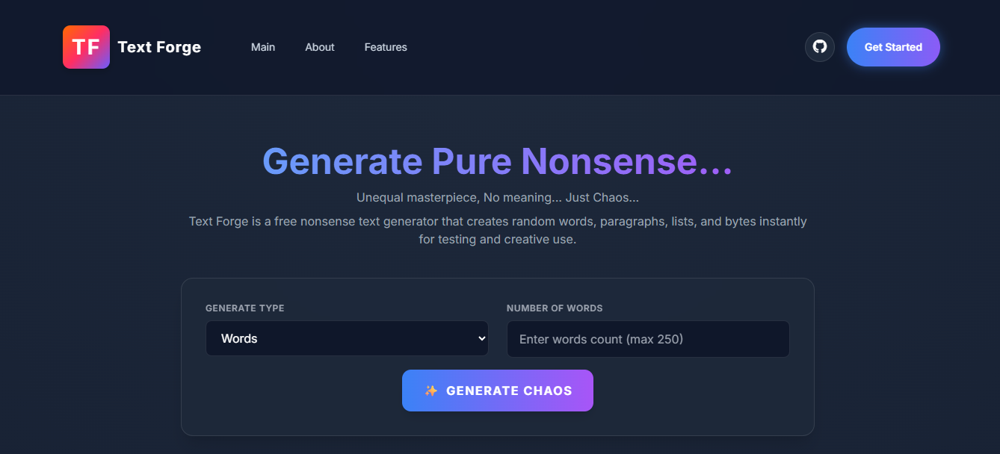
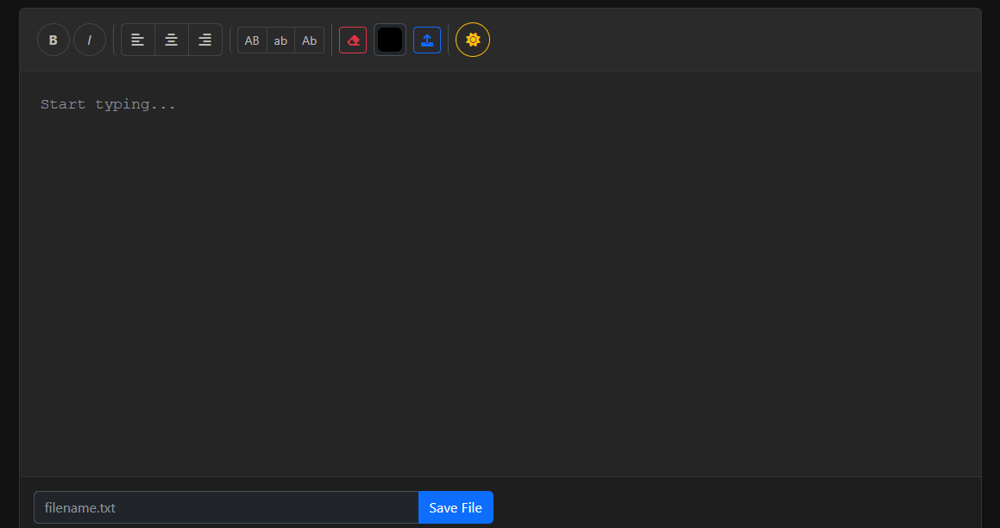
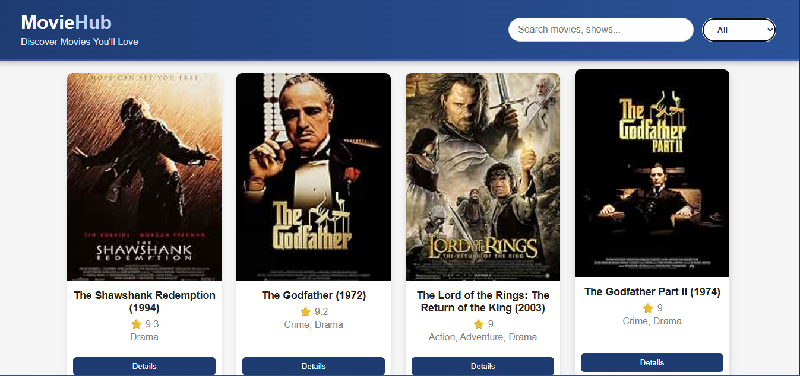
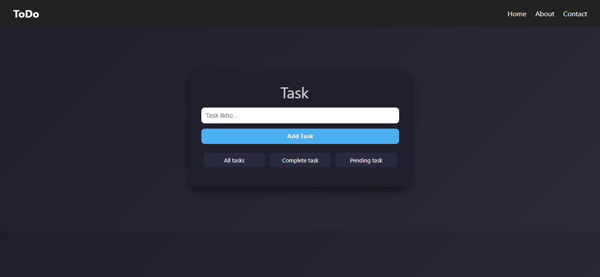

FOUNDATION
Computer Science graduate
Built a technical base in programming, data, and software concepts that supports my frontend work.
RAVINDRA SINGH
I build responsive websites and web tools using HTML, CSS, JavaScript, and Bootstrap. I'm a Computer Science graduate based in Mumbai, India.

I focus on clear, responsive interfaces that work well across devices.
I studied Computer Science and have hands-on experience building websites. My main tools are HTML, CSS, JavaScript, and Bootstrap. I also work with Python and data tools.
Clear structure and readable content come first.
Layouts should work comfortably from phone to desktop.
Each project is a chance to sharpen both design and code.
My education, internship, and ongoing project work.
Built a technical base in programming, data, and software concepts that supports my frontend work.
November 2025 – Present
Developing responsive static and multi-page websites and adapting interfaces to real client requirements.
I build web tools and applications to practice frontend development and explore new techniques.
Tools I use for frontend work, programming, and development.
HTML5 · CSS3 · JavaScript (ES6) · Bootstrap 5 · Responsive design
Python · Flask · NumPy · Pandas
MySQL · MongoDB · Git · GitHub · Manual testing
Selected web applications and tools. Live sites and source code are linked below.
A Python and Flask project for writing code and rendering results in real time.
View sourceRecommends crops using soil nutrients and environmental factors.
View source
A text generator for creating dummy content with custom controls.

A simple online space to write, edit, and save notes without signing up.


Browse my repositories and ongoing work.
This section is reserved for projects I add later.
New project details will go here.
Download or view my resume for more information about my background and experience.
Have a role or project in mind? Send me a message.